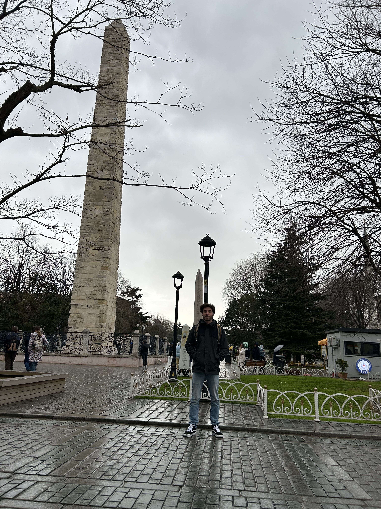
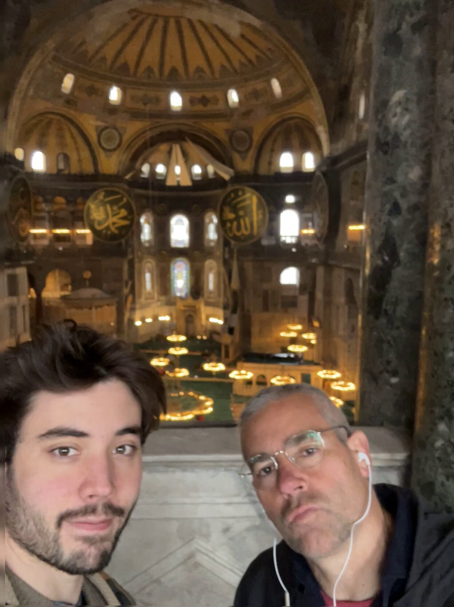
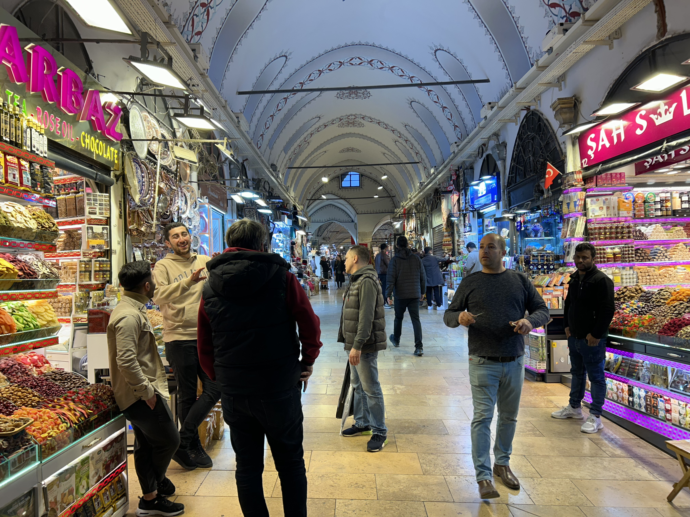
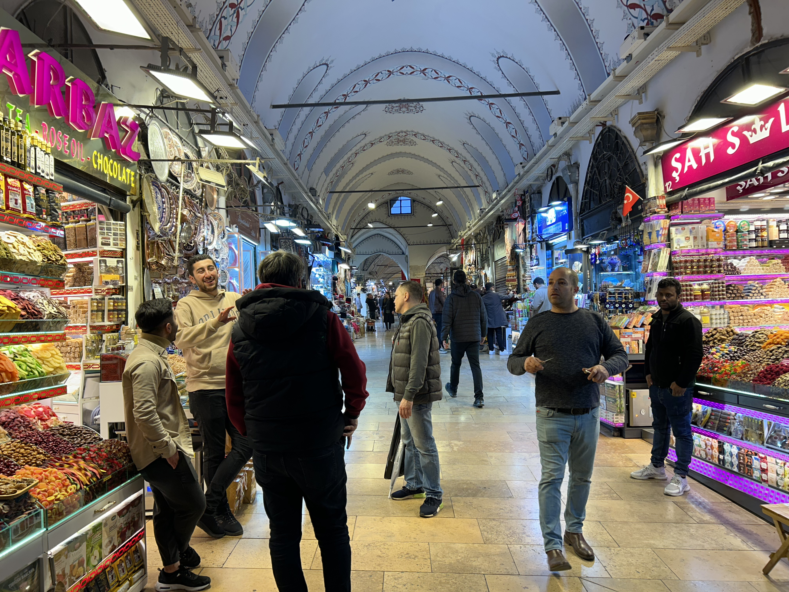
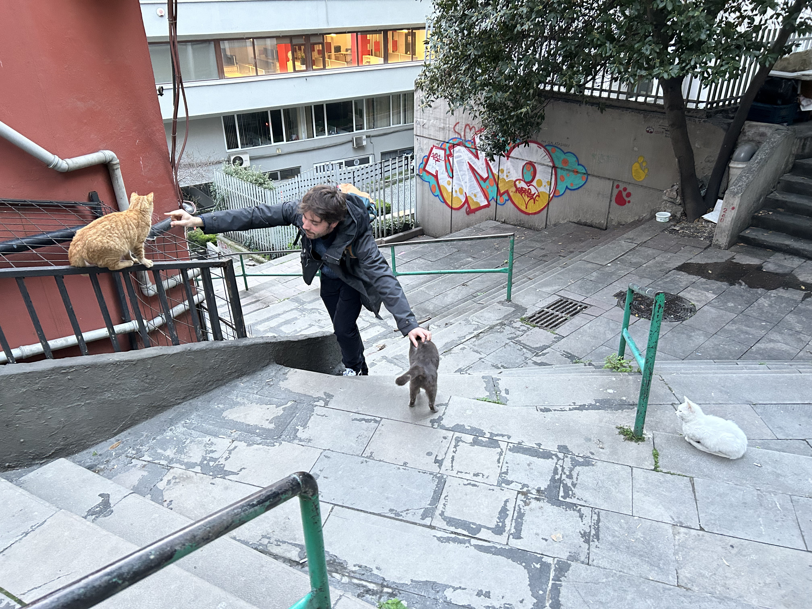
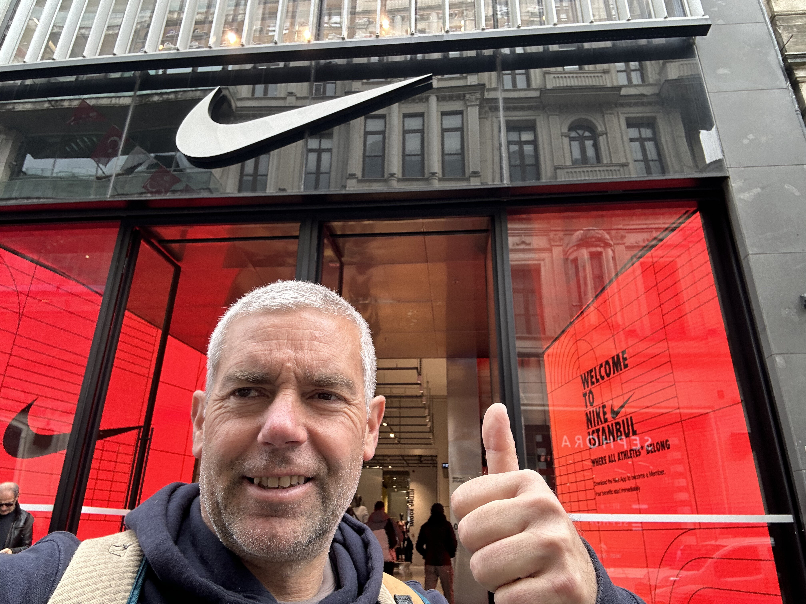

Empezamos por las fotos del primer dia del hipodromo y de Santa Sofia
.jpg)
Aqui MArcos y yo en el hipodromo, detras nuestra la columna de Constantino
no es mi mejor foto fijaros mejor en al Mezquita de Santa Sofia al fondo. A la derecha el interior de la mezquita
Not so bad
la mezquita azul vista desde Hagia Sofia
Estambul es la ciudad de los gatos, aqui un amiguete felino y a la derecha un foton de marcos en la orilla del cuerno de oro. Al fondo la torre Galata.
 
EL GRAN BAZAR. Esto a mi me ha recordado mas bien a la cueva de Ali Baba y los 40 ladrones. DOnde estaba la magia del oriente? Por cierto no me dijisteis si os gustaron los regalos.

Marcos a la busqueda de la ganga y los de detras a la busca del timo,,,,, GATETE 2
Aqui estamos ya en elsegundo dia de camino al distrito de Galata. En la primera foto salgo yo y al fondo ese pedazo de mezquita qyue no recuerdo el nombre( habian tantas...) que era la que estaba a la entrada del Gran BAZAR .La segunda es un foton de Marcos en el puente de Galata. Curioso puente este con todos los restaurantes debajo del piso principal.
Mas de Galata, aunque la torre estaba cerrada y fue una pena vimos sitios curiosos como el hotel de PERA donde Agatha Christie escribio asesinato en el Orient Express, la calle Istikal que es digamos la mas lujosa de Estambul. No habia turcos plastas por esa parte y nos sentimos mas como en casa.
 GATETES A MONTONES... habiamos vuelto al primer mundo, ya mas relajados!
pues este fue nuestro crucero por el Bosforo... ferry pa qui.... ferry pa ya....!!! y a ASIA que nos vamos; si ya podemos presumir de haber estadp en Asia que por cierto me soprendio el buen ambiente, muy animado el barrio de Moda ( se llama asi en truco)con su tranvia y ajatreo estudiantil. Hasta una tienda de comic encontramos.
| INDEX | estambul pisctures | |||
| marcos in the hipodrome | product b | product c | product d | |
| SITIO | picture a | product b | product c | product d |
| commentary | ||||
| row1 | MARCOS IN THE HIPODROME | yo en el hipodromo | fila 1 | |
| row 1 | the hagia sofia ourside | inside hagia sofia | fila 1 | |
| row 1 | inside hagia sofia | fila 1 | ||
| row 1 | MARCOS IN THE HIPODROME | fila 1 | ||